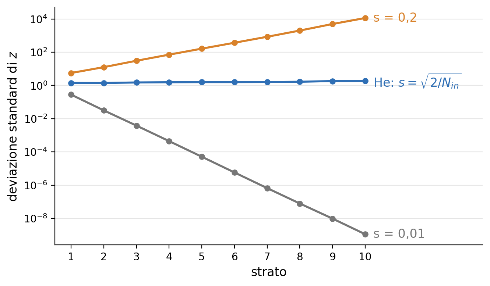

Laboratorio 08
Tipi enumerati, inizializzazione dei pesi e gerarchia delle attivazioni
Soluzione del Laboratorio 07, Task 2
Il task. SigmoidLayer, un layer senza pesi, calcola la sigmoide elemento per elemento con .array(): era l’unica riga da scrivere, quella del Laboratorio 01. Nella prova del Task 3, la rete 784 → 128 → 10 con una sigmoide dopo ogni DenseLayer, le uscite stanno fra 0 e 1.
Soluzione del Laboratorio 07, Task 4 e 5
Il task. Misurare il tempo di 10 000 forward della rete, senza AddressSanitizer, con -O0, -O1, -O2 e -O3.
Il CMakeLists.txt resta con -O3 -Wall. Rispetto a -O0 il tempo cala di circa 40 volte, e quasi tutto il guadagno arriva già con -O1: il compilatore sostituisce le chiamate alle funzioni piccole di Eigen con il loro corpo (inlining) e ne ricava cicli semplici.
Obiettivo di oggi
Finora i pesi erano MatrixXd::Random, uniformi in \([-1, 1]\): scelti così, possono creare problemi all’addestramento, come vediamo nella slide seguente.
Oggi:
- un generatore di numeri casuali,
randnumgen.hpp, con un seme fisso per esperimenti riproducibili; - i pesi iniziali con la formula di He o di Xavier, scelta con due
enum class(Lezione 15); TanhLayer, accanto aSigmoidLayer, sotto una classe base comune delle attivazioni.- (facoltativo) il test del χ² sul generatore di numeri pseudocasuali.
Il CMakeLists.txt resta quello del Laboratorio 07.
Perché l’inizializzazione conta
La scala dei pesi iniziali si sceglie perché la varianza delle pre-attivazioni e degli errori resti circa la stessa da uno strato all’altro, in tutte e due le direzioni:
- in avanti si calcolano le attivazioni \(\mathbf{a}^{(\ell)}\): se la varianza delle pre-attivazioni cresce, saturano (sigmoide, tanh) o esplodono (ReLU); se cala, le pre-attivazioni vanno a 0;
- all’indietro (Lezione 03) si calcolano i \(\boldsymbol\delta^{(\ell)}\): ogni strato moltiplica l’errore per \(w\, f'\), con \(f\) l’attivazione (\(\sigma\) nella Lezione 03).
Il gradiente di un peso, \(\partial E/\partial w^{(\ell)}_{jk} = \delta^{(\ell)}_j\, a^{(\ell-1)}_k\), dipende da tutti e due. Con le attivazioni saturate \(f' \approx 0\) e i \(\delta\) si annullano; con le pre-attivazioni che vanno a 0 le \(a^{(\ell-1)}_k\) diventano tutte uguali (0 con tanh e ReLU, ½ con la sigmoide) e non portano più informazione; con la ReLU che esplode esplodono anche i gradienti (vanishing ed exploding gradients).
Le formule di He e di Xavier
Due formule, ciascuna pensata per una famiglia di attivazioni, con \(N_{in}\) ingressi e \(N_{out}\) neuroni:
| pensata per | \(s\) (gaussiana) | \(a\) (uniforme) | |
|---|---|---|---|
| He | ReLU | \(\sqrt{2 / N_{in}}\) | \(\sqrt{6 / N_{in}}\) |
| Xavier | tanh | \(\sqrt{2/(N_{in}+N_{out})}\) | \(\sqrt{6/(N_{in}+N_{out})}\) |
Con la gaussiana i pesi hanno deviazione standard \(s\); con l’uniforme stanno in \([-a, a)\), di varianza \(a^2/3\), e la deviazione standard è la stessa se \(a = \sqrt{3}\, s\). Glorot e Bengio (2010) propongono Xavier uniforme, He e altri (2015) He gaussiana; le altre due caselle sono le stesse formule, con la stessa varianza, per l’altra distribuzione. «Xavier» è il nome di Xavier Glorot, il primo autore. Nel framework il default è He con pesi gaussiani.
La varianza di \(z\) in avanti

Deviazione standard di \(z\) strato per strato, in 10 strati ReLU (784 → 256 → … → 256) con ingressi gaussiani di varianza 1. Con \(s = \sqrt{2/N_{in}}\) resta costante; con \(s = 0{,}2\) cresce di circa 2,3 volte a strato, con \(s = 0{,}01\) cala di circa 9 volte.
Lo strato \(\ell\) calcola (all’inizio il bias è 0) \[z^{(\ell)}_j = \sum_{k=1}^{N_{in}} w^{(\ell)}_{jk}\, a^{(\ell-1)}_k\] con \(\mathbf{a}^{(0)} = \mathbf{x}\), i pixel. Con pesi indipendenti fra loro e dagli ingressi \(a^{(\ell-1)}_k\), di media 0 e varianza \(s^2\), la media di \(z^{(\ell)}_j\) è 0 e la varianza è: \[\mathrm{Var}(z^{(\ell)}) = N_{in}\, s^2\, \langle (a^{(\ell-1)})^2 \rangle\] con \(\langle (a^{(\ell-1)})^2 \rangle\) la media dei quadrati degli ingressi.
Il fattore ½ della ReLU
Con la ReLU gli ingressi dello strato \(\ell\) sono \(a^{(\ell-1)}_k = \max(0, z^{(\ell-1)}_k)\). All’inizio si pongono i bias a 0 e si estraggono i pesi da una distribuzione simmetrica attorno a 0 (He e altri lo assumono): allora \(w\) e \(-w\), e con loro \(z\) e \(-z\), sono ugualmente probabili, cioè i valori di \(z^{(\ell-1)}_k\) sono simmetrici attorno a 0. La ReLU azzera i valori negativi, cioè metà, e lascia gli altri com’erano: la media dei quadrati è metà della varianza: \[\langle (a^{(\ell-1)})^2 \rangle = \tfrac{1}{2}\, \mathrm{Var}(z^{(\ell-1)}) \qquad\Rightarrow\qquad \mathrm{Var}(z^{(\ell)}) = \tfrac{1}{2}\, N_{in}\, s^2\, \mathrm{Var}(z^{(\ell-1)})\]
La varianza resta la stessa da uno strato al successivo se \(N_{in}\, s^2/2 = 1\), cioè \(s = \sqrt{2/N_{in}}\). Con la ReLU questa condizione basta anche all’indietro (He e altri, 2015): lo vediamo nelle due slide seguenti.
Nel primo strato gli ingressi sono i pixel, non uscite di una ReLU: He e altri usano la stessa formula anche lì, perché un fattore 2 su un solo strato non cambia niente.
La formula di He all’indietro
All’indietro (Lezione 03) \[\delta^{(\ell)}_j = \Big(\sum_{k=1}^{N_{out}} w^{(\ell+1)}_{kj}\,\delta^{(\ell+1)}_k\Big)\,\mathrm{ReLU}'(z^{(\ell)}_j)\] con \(N_{in}\), \(N_{out}\) e \(s\) dello strato \(\ell+1\). È la somma della propagazione in avanti, ma sulle \(N_{out}\) uscite. \(\mathrm{ReLU}'\) vale 1 per metà dei neuroni e 0 per l’altra metà: lo stesso fattore ½ della propagazione in avanti. Quindi \[\mathrm{Var}(\delta^{(\ell)}) = \tfrac12\,N_{out}\,s^2\,\mathrm{Var}(\delta^{(\ell+1)})\] e con \(s^2 = 2/N_{in}\) ogni strato moltiplica la varianza dell’errore per \(N_{out}/N_{in}\).
Perché basta la condizione in avanti
In una rete \(784 \to 256 \to 128 \to 10\) le uscite di uno strato sono gli ingressi del successivo, e il prodotto dei fattori si semplifica (i numeri dello stesso colore): \[\frac{\color{#d9822b}{256}}{784}\cdot\frac{\color{#2f6fb5}{128}}{\color{#d9822b}{256}}\cdot\frac{10}{\color{#2f6fb5}{128}} = \frac{10}{784}\] Resta un fattore fisso, qui \(10/784\), che non dipende dal numero di strati: con 3 come con 100. Non si accumula strato dopo strato, e per questo basta la condizione in avanti.
La formula di Xavier
Glorot e Bengio assumono pesi indipendenti e il regime lineare: all’inizio le \(z\) restano vicino a 0, dove \(f(z) \approx z\), cioè \(f(0) = 0\) e \(f'(0) = 1\), come per la tanh. Allora \(a^{(\ell-1)} \approx z^{(\ell-1)}\) e \(\langle (a^{(\ell-1)})^2\rangle \approx \mathrm{Var}(z^{(\ell-1)})\): in avanti serve \(N_{in}\, s^2 = 1\).
All’indietro (Lezione 03) l’errore che arriva al neurone \(j\) dello strato \(\ell\) è \(\sum_{k=1}^{N_{out}} w^{(\ell+1)}_{kj}\,\delta^{(\ell+1)}_k\), con \(N_{out}\) e \(s\) dello strato \(\ell+1\): la stessa somma della propagazione in avanti, ma sulle \(N_{out}\) uscite. Con la tanh vicino a 0, dove \(\tanh' \approx 1\), la varianza di \(\delta^{(\ell)}\) è \(N_{out}\, s^2\,\mathrm{Var}(\delta^{(\ell+1)})\), e resta la stessa se \(N_{out}\, s^2 = 1\).
Le due condizioni chiedono \(1/s^2 = N_{in}\) e \(1/s^2 = N_{out}\): se \(N_{in} \neq N_{out}\) non si possono soddisfare insieme, e Xavier prende la loro media, come compromesso: \[\frac{1}{s^2} = \frac{N_{in} + N_{out}}{2}, \qquad s^2 = \frac{2}{N_{in} + N_{out}}\]
E la sigmoide?
Nei nostri laboratori gli strati nascosti usano la sigmoide, fuori dalle ipotesi di He e di Xavier: \(\sigma(0) = \tfrac12\) e \(\sigma'(0) = \tfrac14\). Con strati di uguale larghezza:
- in avanti non c’è problema: le uscite hanno media \(\tfrac12\), e dopo uno o due strati la deviazione standard di \(z\) si ferma su un valore fisso, che dipende solo da \(N_{in}\, s^2\) e non dagli ingressi della rete (circa 0,75 con He e 0,5 con Xavier);
- all’indietro ogni strato moltiplica la varianza dell’errore per \(N_{out}\,s^2\,\langle \sigma'(z)^2\rangle\), con \(\sigma' \le \tfrac14\): il fattore è circa \(1/10\) con He e \(1/18\) con Xavier: l’errore cala a ogni strato.
Pesi più grandi non bastano: il «Xavier × 4» di Bengio (2012), cioè \(s \times 4\), dà \(N_{out}\,s^2 = 16 = 1/\sigma'(0)^2\), e il fattore sarebbe 1 se \(\sigma'\) restasse \(\tfrac14\). Ma cresce anche \(|z|\), la sigmoide satura e il fattore arriva solo a circa 0,4. Per questo nelle reti profonde si usano la tanh o la ReLU, e la sigmoide resta in uscita.
Oltre He e Xavier
L’idea è sempre la stessa: si calcolano \(\langle f(z)^2\rangle\) e \(\langle f'(z)^2\rangle\) e si sceglie \(s\) perché la varianza resti costante in avanti e all’indietro. Per esempio:
- Leaky ReLU, \(f(z) = z\) per \(z > 0\) e \(a z\) per \(z < 0\): \(\langle f(z)^2\rangle = \tfrac12(1+a^2)\,\mathrm{Var}(z)\) e \(\langle f'(z)^2\rangle = \tfrac12(1+a^2)\), quindi serve \(\tfrac12(1+a^2)\,N_{in}\,s^2 = 1\) (con \(a = 0\) è He);
- GELU, una ReLU smussata usata in GPT: con He \(\langle f(z)^2\rangle \approx 0{,}45\,\mathrm{Var}(z)\) invece dello 0,5 della ReLU, e He va quasi bene;
- reti molto profonde, come GPT: se a ogni strato la varianza si moltiplica per 0,9, dopo 100 strati si è moltiplicata per \(0{,}9^{100} \approx 3 \cdot 10^{-5}\). Servono altri accorgimenti, che vediamo nell’approfondimento sul transformer.
Da noi gli strati sono pochi e i fattori si accumulano poco: basta non saturare e He va bene.
Task 1: il generatore randnumgen
Scopo: un solo generatore di numeri casuali per tutto il programma, con un seme fisso, così che due esecuzioni diano gli stessi pesi.
- Scaricate
randnumgen.hpp(cliccate sul nome) nella cartella del progetto, accanto amain.cpp. - In
main.cpp, dopo gli altri#include, aggiungete#include "randnumgen.hpp", e come prima riga delmainscriveterng.seed(42);. - Compilate ed eseguite: l’output non cambia, perché nessuno usa ancora
rng.
rng è un reference all’unico generatore, un Singleton (Lezione 13): rng.seed(42) fissa il seme, rng.rseed() ne sceglie uno casuale, rng.ranf() restituisce un double in \([0, 1)\).
Il seme si fissa una volta sola, all’inizio del main: un costruttore che chiamasse rng.seed o rng.rseed cancellerebbe il seed(42), e con lui la riproducibilità.
Task 2: gli enum class
Scopo: scegliere l’inizializzazione dei pesi con due enum class, come nella Lezione 15 e come nel framework.
- In
layer.hpp, dopo#include <Eigen/Dense>e prima della classeLayer:
- In
parametricLayer.hppil costruttore diDenseLayerdiventa:
Gli argomenti di default sono quelli del framework: DenseLayer(128, 784), come nel Laboratorio 07, usa He con pesi gaussiani. Il progetto torna a compilare alla fine del Task 3, che cambia anche la definizione del costruttore.
Task 3: i numeri gaussiani
Scopo: riempire Wt con la formula scelta. rng.ranf() dà numeri uniformi; quelli gaussiani si ottengono con la trasformazione di Box-Muller.
parametricLayer.cpp
#include <cmath>
#include "parametricLayer.hpp"
#include "randnumgen.hpp"
// Task 3: un numero gaussiano di media 0 e varianza 1 (Box-Muller)
static double gauss() {
double x1, x2;
do {
x1 = rng.ranf();
x2 = rng.ranf();
} while (x1 == 0 || x2 == 0);
return std::cos(2 * M_PI * x2) * std::sqrt(-2.0 * std::log(x1));
}In cima a parametricLayer.cpp, al posto della prima riga, copiate queste righe. Il do/while esclude lo zero, perché \(\log(0) = -\infty\).
static davanti a una funzione, fuori da una classe, è quello del C: la funzione si vede solo in questo file. gauss serve solo al costruttore di DenseLayer.
Task 3 (segue): il costruttore
parametricLayer.cpp
DenseLayer::DenseLayer(int Nn, int Ni, InitType type,
DistroType distro) {
// da completare: uno switch su type, senza default,
// che calcola s con le formule della tabella
double s = 0.0;
// s: deviazione standard (gaussiana)
// o estremo a, pesi in [-a, a) (uniforme)
Wt = Eigen::MatrixXd(Nn, Ni);
for (int i = 0; i < Nn; i++) {
for (int j = 0; j < Ni; j++) {
if (distro == DistroType::UNIFORM)
Wt(i, j) = 2.0 * s * (rng.ranf() - 0.5);
else
Wt(i, j) = s * gauss();
}
}
biases = Eigen::MatrixXd::Zero(Nn, 1); // bias nulli
}Sostituisce il costruttore del Laboratorio 07; forward e i getter restano.
Compilate ed eseguite: le righe del Laboratorio 07 ci sono ancora, con numeri diversi.
Da scrivere: al posto del commento, uno switch su type come la sigma della Lezione 15, senza default, ma con s = ... al posto di return. In ogni case la formula è quella della colonna gaussiana o uniforme della tabella, secondo distro, e alla fine c’è un break (slide seguente).
Task 3 (segue): il break
stampa(DistroType::UNIFORM) scrive uniforme e poi anche gaussiana: finito il case UNIFORM, l’esecuzione prosegue nel case GAUSSIAN, come in C.
Con -Wall il compilatore non avverte (g++ lo fa solo con -Wextra).
Se un case non finisce con return, va chiuso con break:
Task 4: la tangente iperbolica
Scopo: aggiungere una seconda attivazione, TanhLayer, e dare alle attivazioni una classe base comune, ActivationLayer, come nel framework.
activation_layers.hpp
#ifndef ACTIVATION_LAYERS_HPP
#define ACTIVATION_LAYERS_HPP
#include "layer.hpp"
// Task 4: la classe base delle attivazioni, per ora vuota
class ActivationLayer : public Layer {
};
class SigmoidLayer : public ActivationLayer {
public:
Eigen::MatrixXd forward(
const Eigen::MatrixXd& input) override;
};
class TanhLayer : public ActivationLayer {
public:
Eigen::MatrixXd forward(
const Eigen::MatrixXd& input) override;
};
#endifActivationLayer per ora è vuota: deriva da Layer, e le attivazioni derivano da lei.
Da scrivere: in activation_layers.cpp, TanhLayer::forward, come SigmoidLayer::forward ma con input.array().tanh().
Task 5: la prova
Scopo: controllare che i pesi abbiano la deviazione standard della formula, e che con la tanh in fondo le uscite stiano fra \(-1\) e \(1\).
main.cpp
// Laboratorio 08, Task 5: la deviazione standard dei pesi
void prova_inizializzazione() {
DenseLayer l(128, 784); // He, gaussiana: i default
const Eigen::MatrixXd& W = l.getWeights();
double media = W.mean();
double sigma = std::sqrt((W.array() - media).square().mean());
std::cout << "deviazione standard dei pesi: " << sigma
<< ", attesa: " << std::sqrt(2.0 / 784) << std::endl;
}Aggiungete a main.cpp questa funzione e quella della slide seguente, prima del main, e in cima #include <cmath>. W.mean() è la media degli elementi di W. W.array() - media sottrae la media da ogni elemento: con .array() la matrice è una tabella di numeri, come in SigmoidLayer::forward (Laboratorio 07). .square() eleva al quadrato ogni elemento e il secondo .mean() ne fa la media: la deviazione standard è la radice della media dei quadrati degli scarti.
Task 5 (segue): la rete con la tanh
main.cpp
// Laboratorio 08, Task 5: una rete con la tanh in uscita
void prova_tanh() {
Eigen::MatrixXd x = Eigen::MatrixXd::Random(784, 1);
Sequential rete;
rete.add(new DenseLayer(128, 784));
rete.add(new SigmoidLayer());
rete.add(new DenseLayer(10, 128, InitType::XAVIER,
DistroType::UNIFORM));
rete.add(new TanhLayer());
Eigen::MatrixXd y = rete.forward(x);
std::cout << "tanh: min " << y.minCoeff()
<< ", max " << y.maxCoeff() << std::endl;
}Nel main, prima di return 0;, aggiungete le chiamate prova_inizializzazione(); e prova_tanh();.
Output atteso, nelle ultime due righe: una deviazione standard vicina a \(\sqrt{2/784} \approx 0{,}0505\) (con rng.seed(42), 0.0505046), e un minimo e un massimo fra \(-1\) e \(1\).
Task 6 (facoltativo): il test del χ²
Scopo: valutare la bontà del generatore di numeri pseudocasuali. rng.ranf() e Box-Muller devono dare numeri gaussiani, e gli \(n = 100\,352\) pesi di un DenseLayer(128, 784) ne sono un campione. Il test è quello del χ² del libro Programmazione Scientifica (paragrafi 7.4.2 e 11.4.1).
I pesi si dividono in \(K\) intervalli. Se nell’intervallo \(\alpha\) cadono \(Y_\alpha\) pesi e \(p_\alpha\) è la probabilità che un numero gaussiano di media 0 e deviazione standard \(\sigma = \sqrt{2/784}\) cada lì, si calcola \(\Phi = \sum_{\alpha} (Y_\alpha - n\,p_\alpha)^2 / (n\,p_\alpha)\).
main.cpp
Da scrivere: il corpo di chi_quadro, che restituisce Φ (oss[α] \(= Y_\alpha\), att[α] \(= n\,p_\alpha\)), in main.cpp prima di prova_chi_quadro.
Task 6 (segue): gli intervalli
main.cpp
// Laboratorio 08, Task 6: i pesi di He contro la gaussiana
void prova_chi_quadro() {
const int K = 20;
DenseLayer l(128, 784); // He, gaussiana
const Eigen::MatrixXd& W = l.getWeights();
double s = std::sqrt(2.0 / 784);
double xmin = -4 * s, dx = 8 * s / K;
int oss[K] = {0};
for (int i = 0; i < W.rows(); i++)
for (int j = 0; j < W.cols(); j++) {
int k = (int) std::floor((W(i, j) - xmin) / dx);
k = (k < 0) ? 0 : (k > K - 1) ? K - 1 : k; // estremi fino a -/+infinito
oss[k]++;
}
double att[K];
for (int k = 0; k < K; k++) {
double a = (k == 0) ? -INFINITY : xmin + k * dx;
double b = (k == K - 1) ? INFINITY : xmin + (k + 1) * dx;
att[k] = 0.5 * W.size() * (std::erf(b / (s * std::sqrt(2.0)))
- std::erf(a / (s * std::sqrt(2.0))));
}
std::cout << "chi quadro: " << chi_quadro(oss, att, K)
<< ", gradi di liberta': " << K - 1 << std::endl;
}Task 6 (segue): le probabilità
Le \(p_\alpha\) di prova_chi_quadro sono quelle della gaussiana di media 0 e deviazione standard \(\sigma = \sqrt{2/784}\), la distribuzione che i pesi di He dovrebbero avere.
Gli intervalli coprono \(\pm 4\sigma\); il primo arriva a \(-\infty\) e l’ultimo a \(+\infty\), così le \(p_\alpha\) sommano a 1. Fra \(a\) e \(b\): \[p_\alpha = \int_a^b \frac{e^{-x^2/(2\sigma^2)}}{\sigma\sqrt{2\pi}}\,dx = \tfrac12\left[\mathrm{erf}\!\left(\frac{b}{\sigma\sqrt2}\right) - \mathrm{erf}\!\left(\frac{a}{\sigma\sqrt2}\right)\right]\] std::erf e INFINITY sono in <cmath>.
Task 6 (segue): leggere il χ²
Chiamate prova_chi_quadro(); nel main, dopo prova_tanh();. Con rng.seed(42) stampa chi quadro: 13.2069, gradi di liberta': 19.
I gradi di libertà sono \(\nu = K - 1\): l’unico vincolo è \(\sum_\alpha Y_\alpha = n\), perché \(\sigma\) viene dalla formula e non dai dati. Se il generatore è buono, Φ segue la distribuzione del χ² con \(\nu\) gradi di libertà. Il libro (Tabella 11.2, con il criterio di Knuth) guarda tutte e due le code: per \(\nu = 19\) il generatore è leggermente sospetto se Φ è fuori da 11,65 – 27,20, sospetto fuori da 10,12 – 30,14, palesemente inaccurato fuori da 7,63 – 36,19. Anche un Φ troppo piccolo è sospetto: numeri troppo regolari per essere casuali.
Task 6 (segue): provate
- In
gauss()(parametricLayer.cpp) scrivete-1.9al posto di-2.0: \(\sigma\) sbagliata del 2,5%. Cosa stampanoprova_inizializzazioneeprova_chi_quadro?
0.0492258contro0.0505076, a occhio vicino, ma Φ =109.877: palesemente inaccurato. - Rimettete
-2.0e ripetete il test con i semi da 1 a 10 (rng.seednelmain). Quante volte Φ esce dalla fascia 11,65 – 27,20?
Due volte: Φ va da10.9114a30.5684. La fascia lascia fuori il 20% dei casi anche con un generatore buono: per questo il libro chiede di ripetere il test e di giudicare l’insieme. - Con
-2.0e poi con-1.9, provate \(K\) = 8, 50 e 200.
Con la \(\sigma\) giusta Φ =4.98199,45.5715,186.665, dentro le fasce dei loro \(\nu\); con-1.9,96.4094,153.826,272.098, sempre fuori. Con molti intervalli piccoli lo scarto si vede meno (Laboratorio 7.3 del libro).
Task da completare
La soluzione verrà discussa all’inizio del prossimo laboratorio.
Per saperne di più: l’inizializzazione
- K. He, X. Zhang, S. Ren, J. Sun, «Delving Deep into Rectifiers», ICCV 2015, sez. 2.2: He e la Leaky ReLU.
- X. Glorot, Y. Bengio, «Understanding the difficulty of training deep feedforward neural networks», AISTATS 2010, sez. 4.2.1: Xavier.
- Y. Bengio, «Practical recommendations for gradient-based training of deep architectures», 2012, arXiv:1206.5533, sez. 3.2: Xavier × 4.
Per saperne di più: il test del χ²
- L. M. Barone, E. Marinari, G. Organtini, F. Ricci-Tersenghi, Programmazione scientifica. Linguaggio C, algoritmi e modelli nella scienza, Pearson 2006, par. 7.4.2 e 11.4.1: il test del χ².
- D. E. Knuth, The Art of Computer Programming, vol. 2, Seminumerical Algorithms, Addison-Wesley (3ª ed. 1997), sez. 3.3.1: il criterio di Knuth.